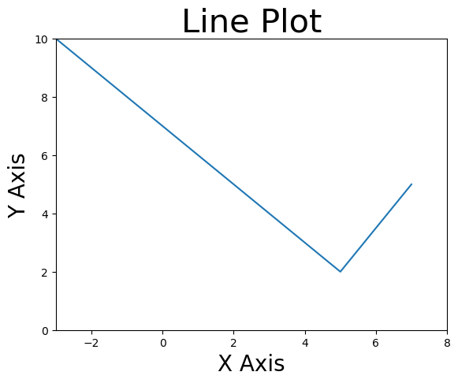
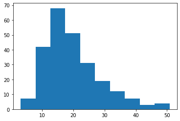
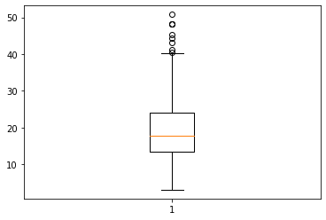
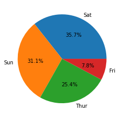
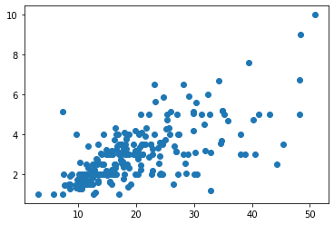
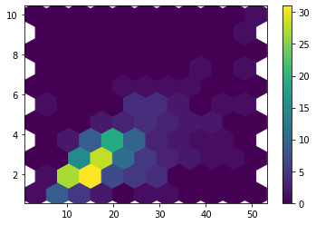
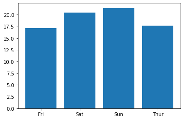
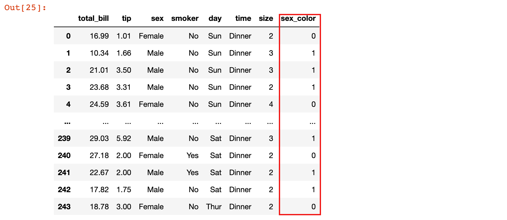
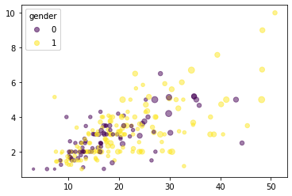

Matplotlib绘图
学习目标
- 知道数据可视化的相关概念
- 知道 Python 数据可视化常用库和各自特点
- 能够使用 Matplotlib 进行简单数据可视化
1. 数据可视化简介
1.1 数据可视化概念
数据可视化是指直观展现数据，它是数据处理过程的一部分。
把数值绘制出来更方便比较。借助数据可视化，能更直观地理解数据，这是直接查看数据表做不到的
数据可视化有助于揭示数据中隐藏的模式，数据分析时可以利用这些模式选择模型
1.2 数据可视化常用库
1）Matplotlib（功能强大，代码相对复杂）
- Matplotlib是Python编程语言的开源绘图库。它是Python可视化软件包中最突出的，使用最广泛的绘图工具。
- Matplotlib在执行各种任务方面非常高效。可以将可视化文件导出为所有常见格式（PDF，SVG，JPG，PNG，BMP和GIF）。
- Matplotlib可以创建流行的可视化类型-折线图，散点图，直方图，条形图，误差图，饼图，箱形图以及更多其他类型的图，还支持3D绘图。
- 许多Python库都是基于Matplotlib构建的，Pandas和Seaborn是在Matplotlib上构建的
- Matplotlib项目由John Hunter于2002年启动。Matplotlib最初是在神经生物学的博士后研究期间开始可视化癫痫患者的脑电图（ECoG）数据。
2）Pandas （使用简单，功能稍弱）
- Pandas的绘图功能基于Matplotlib，是对Matplotlib的二次封装
- Matplotlib绘图时，代码相对复杂，使用Pandas绘制基本图表相对比较简单，更加方便
- Pandas中常用的数据结构 series 和 dataframe 都有plot()方法，用于绘图
3）Seaborn （推荐使用）
- Seaborn是基于Matplotlib的图形可视化python开源库
- Seaborn是在Matplotlib的基础上进行了更高级的API封装，从而使得作图更加容易
- Seaborn的API设计偏向探索和理解数据
4）echarts 和 pyecharts （追求可视化效果，推荐使用）
- ECharts，是百度开源，使用 JavaScript 实现的开源可视化库，可以流畅的运行在 PC 和移动设备上，兼容当前绝大部分浏览器（IE8/9/10/11，Chrome，Firefox，Safari等），底层依赖矢量图形库 ZRender，提供直观，交互丰富，可高度个性化定制的数据可视化图表
- pyecharts 是一个用Python生成 Echarts 图表的类库。
1.3 常见统计图形简介
统计图能够简洁、直观地对主要的数据信息进行呈现，反映事物内在的规律和关联。当然难免会丢失数据的细节，鱼与熊掌不可兼得。
根据统计图呈现变量的数量将其分为单变量图、双变量图、多变量图，然后再根据测试尺度进行细分。变量主要分为3类：无序、有序和连续型变量。
单变量其实就是通常我们所说的数据集中的一列数据。
单变量图：观察一个变量的数据分布情况。
- 连续型变量：直方图、箱线图
- 举例：查看用户消费金额的分布情况
- 分类变量：条形图(柱状图)、饼图
- 举例：按周几统计每天的消费数量
双变量图：观察两个变量(自变量和因变量)之间的联系。
因变量为连续型
- 自变量为无序分类变量：简单条形图
- 举例：按 day(周几) 统计每餐消费的平均值并进行可视化
- 自变量为有序分类变量：折线图、条形图
- 举例：按 day(周几) 统计每餐消费的平均值并进行可视化
- 自变量为连续性变量：散点图、蜂巢图
- 举例：查看消费数据中消费tip随着消费金额total_bill的变化情况
- 自变量为无序分类变量：简单条形图
因变量为分类型
- 自变量为分类型：条形图
- 连续变量：目前没有很好的图形可用。常见处理方式是，将自/应变量交换后用条图呈现
多变量图(3变量图)：观察多个变量之间的联系
此处仅介绍 3 变量图，切勿将统计图做得太复杂，不然将失去统计图
直观明了的优点
- 要表现3个变量的关联，最好是采用三维坐标的立体统计图，但由于实际上还是在平面上对三维图呈现，立体图在使用上并不方便
- 当其中有变量为分类变量时，可以对二维图进行扩充，使二维图能够表现更多信息。例如在散点图中用点的形状或者颜色区分不同类别，其实就是呈现了两个连续变量和一个分类变量的数量关联信息。类似的还有多条折线图。
2. Matplotlib 绘图
2.1 Matplotlib绘图入门
基本概念：

- Figure：图或画布，画图之前首先要创建一个画布
- Axes：坐标系，一个图上可以添加多个坐标系，在每个坐标系上都可以绘图
- Axis：坐标轴，坐标系分为x轴和y轴，可以设置坐标轴的刻度、标题等
基本绘图：
使用 Matplotlib 绘图，首先需要导入 pyplot 模块，该模块包含一系列绘图函数的相关函数
import matplotlib.pyplot as plt
Matplotlib提供了两种方法来作图：状态接口和面向对象
1）状态接口
# 准备数据
x = [-3, 5, 7]
y = [10, 2, 5]
# 绘制折线图
plt.plot(x, y)
# 设置 x 轴、y 轴刻度
plt.xlim(-3, 8)
plt.ylim(2, 10)
# 设置 x 轴、y 轴标题
plt.xlabel('X Axis', size=20)
plt.ylabel('Y Axis', size=20)
# 设置图形标题
plt.title('Line Plot', size=30)
# 显示图形
plt.show()

2）面向对象
# 准备数据
x = [-3, 5, 7]
y = [10, 2, 5]
# 创建图(画布)
fig = plt.figure(figsize=(6.4, 4.8))
# 在图(画布)上添加坐标系
axes = fig.subplots(1, 1)
# 在坐标系上进行绘图
axes.plot(x, y)
# 设置坐标系 x 轴、y 轴刻度
axes.set_xlim(-3, 8)
axes.set_ylim(0, 10)
# 设置坐标系 x 轴、y轴标题
axes.set_xlabel('X Axis', fontsize=20)
axes.set_ylabel('Y Axis', fontsize=20)
# 设置坐标系标题
axes.set_title('Line Plot', fontsize=30)
# 显示图形
plt.show()

2.3 使用 Matplotlib 绘制统计图
本小节使用 seaborn 库的 tips 数据集，其中包含了某餐厅服务员收集的顾客付小费的相关数据
1）加载 tips 数据集类
tips = sns.load_dataset('tips')
tips.head()

2.3.1 单变量绘图
直方图
1）查看客户消费金额 total_bill 的分布情况
# 创建图和坐标系
fig = plt.figure()
axes = fig.subplots(1, 1)
# bins=10：表示把数据分成几组，即将数据划分按顺序为几个区间
axes.hist(tips['total_bill'], bins=10)
# 显示图形
plt.show()
注意：直方图的柱子宽度表示该组数据的区间。

箱线图：
fig = plt.figure()
axes = fig.subplots(1, 1)
# 箱线图
axes.boxplot(tips['total_bill'])
# 显示图形
plt.show()

箱线图补充：

- 箱子的中间有一条线，代表了数据的中位数
- 箱子的上下底，分别是数据的上四分位数（Q3）和下四分位数（Q1）
- 四分位距（interquartile range，简称IQR）：IQR = Q3 - Q1
- 上边缘：Q3 + 1.5*IQR，下边缘：Q1 - 1.5*IQR
- 箱体包含了50%的数据。因此，箱子的高度在一定程度上反映了数据的波动程度
- 有时候箱子外部会有一些点，可以理解为数据中的"异常值"
条形图：
1）按照 day(周几) 统计每天的消费数量
# 按照 day(周几) 统计每天的消费数量
result = tips['day'].value_counts()
fig = plt.figure()
axes = fig.subplots(1, 1)
# axes.bar(x, y)：指定x轴和y轴数据
axes.bar(result.index, result.values)

饼图：
fig = plt.figure()
axes = fig.subplots(1, 1)
# pie：饼图
axes.pie(day_counts.values, labels=day_counts.index, autopct='%.1f%%')

2.3.2 双变量绘图
散点图
1）查看消费数据中消费tip随着消费金额total_bill的变化情况
fig = plt.figure()
axes = fig.subplots(1, 1)
# axes.scatter(x, y)：散点图，指定x轴和y轴的数据
axes.scatter(tips['total_bill'], tips['tip'])

蜂巢图：
fig = plt.figure()
axes = fig.subplots(1, 1)
# axes.hexbin(x, y)：蜂巢图，指定x轴和y轴的数据
# gridsize=10：指定x轴方向上每一横行分几个格子
hb = axes.hexbin(tips['total_bill'], tips['tip'], gridsize=10)
# 添加图形右侧的颜色提示栏
fig.colorbar(hb, ax=axes)

条形图：
1）按 day(周几) 统计每餐消费的平均值并进行可视化
# 按 day(周几) 统计每餐消费的平均值
result = tips.groupby('day').total_bill.mean()
fig = plt.figure()
axes = fig.subplots(1, 1)
# axes.bar(x, y)：条形图，指定x轴和y轴的数据
axes.bar(result.index, result.values)

折线图：
# 创建一个有序的分类数据类型
from pandas.api.types import CategoricalDtype
cat = CategoricalDtype(categories=['Thur', 'Fri', 'Sat', 'Sun'], ordered=True)
# 将 day 这列数据转换为有序分类数据类型
tips['day'] = tips['day'].astype(cat)
# 按 day(周几) 统计每餐消费的平均值
result = tips.groupby('day').total_bill.mean()
fig = plt.figure()
axes = fig.subplots(1, 1)
# axes.plot(x, y)：折线图，指定x轴和y轴的数据
axes.plot(result.index, result.values)

2.3.3 多变量绘图
散点图：
1）查看不同性别的消费客户中，消费tip随着消费金额total_bill的变化情况
def recode_sex(sex):
if sex == 'Female':
return 0
else:
return 1
tips['sex_color'] = tips['sex'].apply(recode_sex)
tips

# 创建图和坐标系
fig = plt.figure()
axes = fig.subplots(1, 1)
# 散点图
# c：设置根据哪列数据将散点图分类，使用不同的颜色表示
scatter = axes.scatter(tips['total_bill'], tips['tip'],
c=tips['sex_color'], s=tips['size'] * 10, alpha=0.5)
# 添加图例
legend = axes.legend(*scatter.legend_elements(), title='gender')
axes.add_artist(legend)
# 显示图形
plt.show()

总结
- Python常用绘图库
- Matplotlib、pandas，seaborn，pyecharts等
- Matplotlib 绘图步骤
- 导入Matplotlib.pyplot
- 准备数据
- 创建图表，坐标轴
- 绘制图表
- 设置x、y轴标题、坐标系标题等
- 常见统计图
- 单变量图：直方图、箱线图、条形图、饼图
- 双变量图：散点图、蜂巢图、条形图、折线图
- 多变量图：在二维图的基础上，使用另外一个变量，将数据进行分类显示成不同的颜色